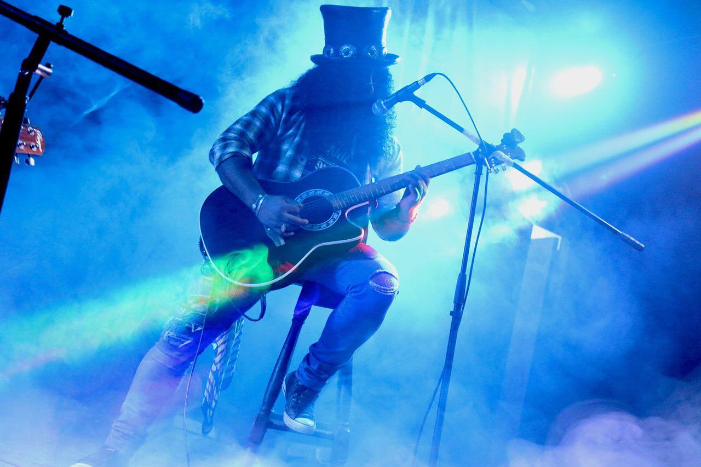

Soinowed Records

Multimedia
.jpg)
Lyrics
Acerca De
Soinowed Records
Multimedia
Lyrics
Acerca De
Te explicamos qué es el rock, el origen y la historia de este famoso género musical. Además, sus subgéneros y los instrumentos que utiliza.
Se conoce como Rock a un conjunto de géneros variados de música popular, descendientes más o menos del Rock n’ Roll original nacido en los Estados Unidos en la década de 1950, como fruto de una fusión entre la música Country y el Rhythm and Blues.
Típicamente, el Rock es un género reconocido por la predominancia de la guitarra eléctrica, con canciones de compás 4/4 y una estructura verso-estribillo. Pero en su evolución particular es difícil hoy en día dar con características realmente comunes.
En líneas generales las temáticas de sus canciones apuntan a lo social, lo político y también el amor y la emoción, haciendo énfasis sobre todo en aspectos como la composición, la performance en vivo y la originalidad.
En líneas generales las temáticas de sus canciones apuntan a lo social, lo político y también el amor y la emoción, haciendo énfasis sobre todo en aspectos como la composición, la performance en vivo y la originalidad.
Los 80 marcaron el retorno del Rock a vertientes más comerciales, eventualmente dando nacimiento al Pop, con bandas como Duran Duran, Tears for Fears, INXS, Billy Idol o, más aún, Michael Jackson y Madonna. Por otro lado, el Rock Alternativo se hace presente con The Cure, U2, R.E.M., Pixies y muchos más, junto con el remanente del Punk.
Los 90 trajeron una nueva invasión británica, así como la aparición de vertientes más desencantadas y tristes como el Grunge o el Britpop, o más mecanizantes como el Rock Industrial, que tomaba sonidos de fábricas y factorías, y que luego daría pie a la música electrónica. Bandas legendarias como Guns n’ Roses, Metallica, Nirvana, Radiohead, Oasis, Blur y Placebo hicieron su entrada en el panorama.